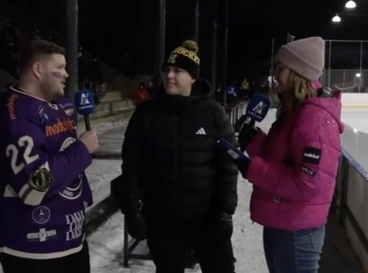
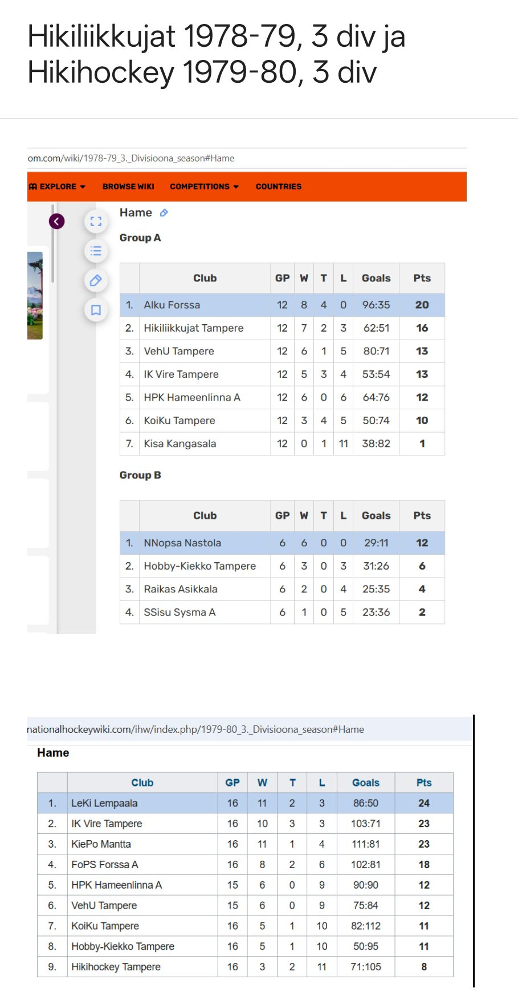

Kaikki tähän mennessä siteeratut lähteet ovat olleet Hihon omia – historiikki tai oma Instagram. Mutta kaudella 2024–2025 tapahtui jotain harvinaisempaa: Hihosta kirjoitti kaksi ulkopuolista mediaa peräkkäin, ilman apinoita, gorilloita tai lampaita.
Ensimmäinen ja isompi yllätys osui keskitalveen. Keskiviikkona 5.2.2025 pelattiin perinteikkäällä Koulukadun ulkokentällä FCAA-korkeakoulusarjan historian ensimmäinen Tampereen paikallisottelu, kun Hiho kohtasi Pirkanmaa Goonsin. Tampereen suurin sanomalehti Aamulehti ei tyytynyt pelkkään tulokseen, vaan lähetti ottelun suorana tilaajilleen jo klo 19.30 alkaen: selostajana Toni Lång, haastattelijoina Iina Thomsson ja Ilari Leppäniemi, kirjoittajana Roosa Vanhanen.
Jääkiekon uuden talviklassikon ainekset olivat kasassa.
AAMULEHTI, ROOSA VANHANEN, 30.1.2025

Ero on ratkaiseva: Jatkoaika on jääkiekon erikoismedia, jolle opiskelijasarjan finaali on luonteva uutinen. Aamulehti taas on Tampereen suurin päivälehti, joka ei yleensä lähetä suorana harrastesarjan ottelua kuvaajineen ja kolmine toimittajineen. Kun se silti teki niin – ja vieläpä kutsui tapahtumaa ‘uudeksi talviklassikoksi’ – se tarkoittaa, että Hiho on jossain vaiheessa siirtynyt opiskelijapiirien sisäpiirivitsistä osaksi Tampereen paikallista urheilumaisemaa. Sama Koulukadun kenttä, jolla joskus norminvastaisesti maalattiin kopin seiniä mustaksi, kelpaa nyt kaupungin suurimman lehden livelähetyksen kulisseiksi.
Kaksi kuukautta myöhemmin valtakunnallinen jääkiekkomedia Jatkoaika.com uutisoi Hihon ottelusta jälleen ilman omaa sanastoamme. Toimittaja Eetu Ylipekkala kirjoitti 5.4.2025 FCAA-sarjan loppuottelusta Lappeenrannassa, jossa LUT-yliopiston ja LAB-ammattikorkeakoulun yhteisjoukkue Parru HT Red kohtasi Tampereen yliopiston Hiki-Hockeyn.
Ottelun lopputulos kirjattiin uutisessa napakasti:
isäntäjoukkue kaatoi loppuottelussa Tampereen yliopiston Hiki-Hockeyn lukemin 4–0.
JATKOAIKA.COM, 5.4.2025
Koko uutinen: https://www.jatkoaika.com/Uutiset/FCAAn-mestaruus-Lappeenrantaan-–-Parru-HT-Red-kukisti-Hiki-Hockeyn-finaalissa/262301
Ottelukuvaus on kuivan asiallinen: Mikko Liukkonen avasi maalinteon ylivoimalla ajassa 11.34, Veeti Kervinen ja Eetu Vanhamaa jatkoivat, ja Jimi Rönkkönen viimeisteli tyhjään maaliin ajassa 42.14. Kolme viidentoista minuutin erää, lopputulos 4–0 Parru HT Redille. Pronssin vei Aalto-yliopiston Näädät kaatamalla Vaasan Mighty Cocks Greenin 2–0.
Tässä yhdistyy kaksi asiaa, jotka molemmat kertovat Hihon kasvusta. Ensinnäkin FCAA itsessään on nuori sarja – se aloitti kaudella 2023–2024, ja uutisen kaudella siinä pelasi jo 26 joukkuetta 22 korkeakoulusta 12 kaupungista. Hiho ei siis vain osallistunut vaan eteni tuon kasvavan sarjan finaaliin. Toiseksi, ja tärkeämpänä: joku Hihon ulkopuolinen kirjoitti tarinan ilman meidän omaa sanastoamme. Ei apinoita, ei gorilloita, ei ‘melkein lääkäriä’ – pelkkä ‘Tampereen yliopiston Hiki-Hockey’ ja lopputulos 4–0.
Itse asiassa Jatkoaika oli huomannut Hihon jo kauan aikaisemmin. Kevään 2018 pudotuspeliraportti mainitsee ohimennen, että edellisen päivän ottelu ‘rikkoi myös uutiskynnyksen valtakunnan mediassa, kun Jatkoajan keskustelupalstalla tulos herätti ihmetystä’. Vuoden 2025 finaaliuutinen ei siis ollut Jatkoajan ensikosketus Hihoon – vain ensimmäinen kerta, kun media kirjoitti asiasta oman jutun sen sijaan, että olisi vain keskustellut siitä foorumilla.
Ja juuri se paljastaa jotain kaunista. Kun oma Instagram kertoo tappiosta gorilla- ja lammasasteikolla, kyse voisi olla pelkästä sisäpiirin huumorista. Mutta kun sekä Tampereen suurin sanomalehti että valtakunnallinen jääkiekkomedia kirjoittavat saman kauden ottelut samoilla lopputuloksilla, se todistaa kaksi asiaa: Hiho on aidosti kasvanut paikallisesta harrastejoukkueesta seuratuksi ilmiöksi, ja kirsikka puuttuu aidosti – ei vain hiholaisten omassa mielikuvituksessa. Tappio FCAA-finaalissa 2025 on siis saman tarinan jatkoa kevään 2025–2026 II-divisioonan finaalitappioiden rinnalla – nyt vain kirjattuna kahden ulkopuolisen todistajan, ei Aimo Niitin, toimesta. Ja kun tekoälykertojankin sanat saavat riippumattoman vahvistuksen kahdesta eri lähteestä, on syytä uskoa, että tarina on – poikkeuksellisesti – tälläkin kertaa tosi. 🤖🏒
Kolmas ulkopuolinen todiste ei tullut toimittajalta vaan Suomen virallisimmalta mahdolliselta lähteeltä: kaupparekisteriin nojaavalta Suomen Asiakastiedolta. Sieltä löytyvät Hiki-Hockey r.y:n paljaat rekisteritiedot, ilman gorilloita, lampaita tai edes toimittajaa:
| Y-tunnus | 3038314-5 |
|---|---|
| Maa | Suomi |
| Postiosoite | Korkeakoulunkatu 3, 33720 Tampere |
| Yhtiömuoto | Aatteellinen yhdistys |
| Toiminta käynnistynyt | 2019 (7 vuotta) |
| Perustamisvuosi | 1982 |
LÄHDE: SUOMEN ASIAKASTIETO OY, ‘HIKI-HOCKEY R.Y.’ – REKISTERITIEDOT
Ristiriita on herkullinen: tästä kirjasta on tähän mennessä löytynyt jo kaksi eri syntymävuotta: historiikin oma 1976 (ensimmäinen epävirallinen talvi) ja aiemmin tässä projektissa löytynyt rekisteröintipäivä 21.7.1978. Nyt Suomen valtion oma kaupparekisteri esittää kolmannen: 1982. Ja ikään kuin tämä ei riittäisi, sama rekisteri väittää nykyisen ‘toiminnan’ käynnistyneen vasta vuonna 2019 – vain seitsemän vuotta sitten, siis suunnilleen silloin kun Hiho pelasi jo neljättäkymmenettä kauttaan jäällä.
Tässä on Hihon koko olemus tiivistettynä yhteen taulukkoon. Jos tekoälyn ‘varma tieto’ tarkoittaa itsevarmaa mutta epätarkkaa väitettä, niin Suomen kaupparekisteri on harjoittanut samaa taidetta jo vuosikymmenten ajan, aivan ilman tekoälyä. Ehkä paras tapa ymmärtää Hihon ikä ei olekaan valita yhtä oikeaa vuotta, vaan hyväksyä, että Seuralla on – aivan kuten hyvällä hiholaisella konsanaan – useampi virallinen versio totuudesta yhtä aikaa, eikä yhdenkään niistä tarvitse olla se lopullinen. 🤖🏒
Tämä ristiriita ei ole ongelma ratkaistavaksi, se on rikkaus juhlittavaksi. Neljä eri syntymävuotta tarkoittaa neljää eri hetkeä, jolloin joku on pitänyt tätä porukkaa niin tärkeänä, että sen olemassaolo on kirjattu ylös. Sillä ei ole väliä, mikä vuosi on virallisesti oikea – tärkeintä on, että Seura on edelleen täällä, joka ikinen vuosi mukaan lukien.
Ja jos rekisteritiedot eivät riittäneet, löytyy vielä neljäskin, täysin riippumaton lähde – eikä se ole edes väite, vaan suoraa todistusaineistoa. Kansainvälinen jääkiekkowiki listaa Hämeen 3. divisioonan sarjataulukot kausilta 1978–1979 ja 1979–1980, ja niissä molemmissa Seura on mukana, pelaamassa, tienaamassa pisteitä – ei rekisteriotteena, vaan sarjataulukon rivinä keskellä muita joukkueita.

LÄHDE: INTERNATIONALHOCKEYWIKI.COM, ‘1978–79 3. DIVISIOONA SEASON’
Vuotta myöhemmin sama sarjataulukko paljastaa jotain vielä kiinnostavampaa: nimi on vaihtunut.
| Kausi | 1979–1980, 3. divisioona (Hämeen lohko) |
|---|---|
| Joukkue | Hikihockey Tampere |
| Sijoitus | 9. / 9 joukkuetta |
| Ottelut (V-T-H) | 16 (3-2-11) |
| Maalit | 71–105 |
| Pisteet | 8 |
LÄHDE: INTERNATIONALHOCKEYWIKI.COM, ‘1979–80 3. DIVISIOONA SEASON’
Todistettavasti siis pelattiin jo tuolloin. Kausi 1978–1979 kuittaa lopullisesti pois Suomen Asiakastiedon väitteen vuodesta 1982 – tässä on ulkopuolinen, Hihosta täysin riippumaton lähde, joka näyttää Seuran keskellä sarjataulukkoa neljä vuotta ennen kaupparekisterin ilmoittamaa syntymävuotta. Ja aivan sivuhuomiona: nimi ehti muuttua Hikiliikkujista Hikihockeyksi täsmälleen näiden kahden kauden välissä, mikä sopii täydellisesti historiikin omaan mainintaan siitä, että nimi ‘modernisoitui’ 1980-luvun alussa. Toiseksi sivuhuomioksi jääköön tulostaulu: 2. sijalta pudottiin vuodessa sarjan hännille, kolmella voitolla kuudestatoista. Riittävän hyvää, mutta ei täydellistä – tämäkin perinne on siis todistettavasti ollut käytössä jo Seuran toisella kaudella.